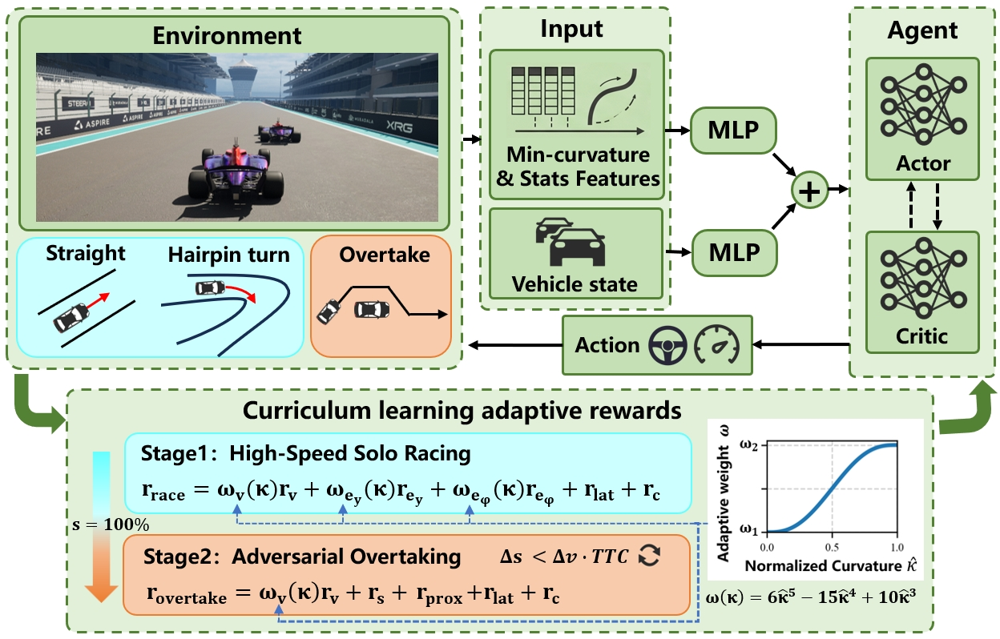

Illustration of the PAC-RL framework. The system integrates a feature enhancement mechanism utilizing statistical track features, and a progressive curriculum learning strategy with curvature-adaptive rewards to facilitate both extreme-speed racing and safe overtaking maneuvers.
Reinforcement learning has shown great promise for autonomous driving. However, achieving stable and safe control at extreme speeds under highly dynamic and nonlinear conditions remains a critical challenge. In particular, high-speed racing amplifies control oscillations, while varying track geometries and competitive interactions introduce conflicting objectives between speed maximization and safety preservation. To address these challenges, we propose a Physics-Adaptive Curriculum Reinforcement Learning (PAC-RL) framework for extreme-speed autonomous racing. First, we propose a state representation integrating feature decoupling and minimum curvature guidance with statistical priors to enhance anticipatory cornering awareness and suppress high-speed control oscillations. Second, we develop a physics-adaptive reward formulation that incorporates curvature-aware weighting and safe switching based on time-to-collision, achieving continuous and conflict-free coordination between time-trial efficiency and overtaking safety. Third, we introduce a progressive curriculum learning paradigm that facilitates structured policy evolution from basic stabilization to high-speed cornering and adversarial overtaking. Extensive experiments demonstrate that the proposed PAC-RL framework achieves higher racing speeds, improved control stability, and more reliable overtaking performance compared to baseline methods, with real-time inference capability. Video demonstrations are available at https://albertcare.github.io/PAC-RL/.
Demonstration of the PAC-RL agent maintaining stability and high speed on the racing track.
The agent successfully performs overtaking maneuvers against opponent vehicles under different conditions.